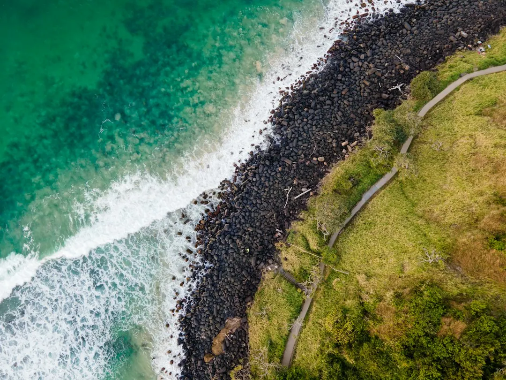

A supplied and installed concrete sleeper wall is listed at about $250 to $650 or more per square metre of wall face in 2026 Australian price guides. A one metre wall on the Gold Coast is shown at roughly $295 to $590 per lineal metre, with $440 described as typical. Engineering and certification, where required, are listed at roughly $500 to $2,000 per job. These are indicative figures, since access, height, drainage, footings, soil and engineering affect the final quote.
For homeowners comparing concrete sleeper retaining walls gold coast options, the practical decisions are wall height, ground conditions, drainage, access, approval requirements and the finish suited to the property.
Concrete Sleeper Retaining Walls Gold Coast Explained
The named business, Concrete Sleeper Retaining Walls Gold Coast, describes precast sleepers slotted between hot-dip galvanised steel posts concreted into the ground. That arrangement is presented for sloping yards, tired timber walls, new boundary walls, garden beds and level areas behind a cut.
Before comparing colours, record the approximate length and height, what sits above the retained soil, whether an old wall must be removed, and how machinery could reach the work area. A driveway, house or pool above the wall can affect the design. Soil type, access and drainage also affect the price.
The published guide states that sleepers are typically 200 millimetres high and at least 75 millimetres thick, in 1.6, 2.0 and 2.4 metre lengths. Those dimensions make wall length and post spacing useful details to include in the first enquiry.
Read the cost figures correctly
The 2026 guide gives two ways to compare estimates. A supplied and installed wall is listed at around $250 to $650 or more per square metre of wall face. A one metre high wall is listed at roughly $295 to $590 per lineal metre on the Gold Coast, with $440 described as typical.
Those figures are guides, not a quotation for a particular property. Ask whether the estimate includes excavation, removal of an existing timber wall, steel posts, concrete footings, drainage, spoil removal, machinery access and engineering or certification. A narrow site or difficult access can change the total even when the wall dimensions look similar.
Where engineering design and certification are needed, the guide lists roughly $500 to $2,000 per job. Ask each contractor to state whether the price is based on wall face area or lineal metres, and which items remain subject to inspection.
Drainage and approval checks
The installation detail describes drainage behind the wall using a slotted agricultural pipe at the base, clean gravel and geotextile fabric, with the pipe falling to an approved outlet. Ask where collected water will go and whether the outlet works with the boundary and surrounding ground levels.
Retaining walls are regulated building work in Queensland. The guide says building work valued over $3,300, including most retaining walls, must be completed by a QBCC licensed contractor, typically under a structural landscaping or builder licence class.
Taller walls, or walls carrying extra load above them, may need building approval and an engineer's design. Where approval is needed, a building certifier issues it before work begins. Where engineering is required, the design must be done or directly supervised by a Registered Professional Engineer of Queensland. Confirm responsibility for these checks before excavation.
Compare materials and boundary details
Concrete block walls and rock or boulder walls may suit different sites, appearances or structural requirements. Compare the required height, available space, machinery access, finish beside the house and any fence above the wall, rather than comparing material price alone.
Boundary work can involve a Colorbond fence on top or under-fence plinths. That creates a combined wall and fencing question involving drainage, setbacks and the connection between fence posts and the retaining structure. The guide lists charcoal, timber-look, sandstone and plain grey finishes, with plain grey sleepers suitable for exterior masonry paint.
Concrete sleepers are described as a replacement option for treated pine because they do not rot. If an existing timber wall is leaning or deteriorating, ask for removal, disposal and replacement to be shown separately so the scope is clear.
Who this guide applies to
This guide is for Gold Coast homeowners, landlords, builders and property managers considering a new sleeper wall, a failing timber wall, a boundary wall, a fence plinth or a landscaped area on a sloping block. It is particularly useful when a quote lists sleepers and posts but leaves excavation, drainage or disposal unclear.
Put the suburb, approximate dimensions, retained load, access limits and existing-wall condition in the first enquiry. The named business says an enquiry has no cost and no obligation to proceed. Its published process also says an installer should lodge a free Before You Dig Australia enquiry before post holes are excavated. For another comparison of local retaining-wall decisions, see this related Gold Coast retaining wall guide.
- Describe the wall. Give the suburb, approximate length and height, what the wall holds back, and whether an existing wall is being removed.
- Discuss site conditions. Ask how soil, access, drainage, surcharge loads, boundary position and machinery affect the proposed construction.
- Check approvals. Confirm whether the wall needs building approval, an engineer or a licensed contractor before work begins.
- Compare inclusions. Check that each quote states the allowances for sleepers, posts, footings, drainage, excavation, disposal and certification.
- Check underground services. The published guide says an installer should lodge a free Before You Dig Australia enquiry before post holes are excavated.
| Project situation | Main decision | Ask for in writing |
|---|---|---|
| Sloping yard | Required height and retained level | Excavation, posts, footings and drainage |
| Old timber wall | Removal or rebuild scope | Demolition, disposal and replacement materials |
| Boundary wall | Relationship to fence and neighbours | Setbacks, drainage outlet and fence interface |
| Taller or loaded wall | Whether design approval is needed | Engineering and certification allowance |
Common questions
How much does a one metre wall cost on the Gold Coast? The published 2026 guide lists roughly $295 to $590 per lineal metre for an installed one metre high wall, with $440 described as typical. It also lists about $250 to $650 or more per square metre of wall face.
What drainage is described for a sleeper wall? The guide describes a slotted agricultural pipe, clean gravel and geotextile fabric behind the wall, with the pipe falling to an approved outlet.
When might engineering be needed? Taller walls and walls carrying extra load above them may need building approval and an engineer's design. Confirm the requirement for the particular site before work begins.
Can the wall support a Colorbond fence? The guide describes boundary walls that carry a Colorbond fence or sit beneath it as plinths. Drainage, setbacks and the fence interface should be included in the quote.
What should a quote identify? Ask whether it includes access, excavation, existing-wall removal, posts, footings, sleepers, drainage, spoil removal, engineering and certification where required.
This guide covers Gold Coast sleeper wall choices, indicative costs, drainage, approvals, quote comparisons and boundary details.